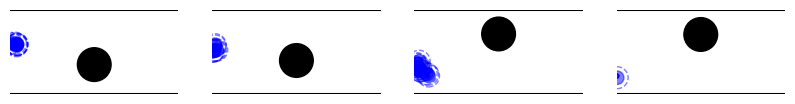
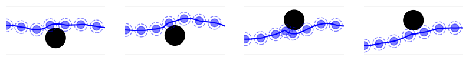

TODOs - [x] begin: text infos - [x] end: eval, ignoring log_*_interval - [x] begin: hparams - [ ] adapt to use in imitation - [x] option to dump in sync with logging - [x] begin: graph - [ ] network (just use eval callback or CheckpointCallback)
[12]:
%load_ext autoreload
%autoreload 2
The autoreload extension is already loaded. To reload it, use:
%reload_ext autoreload
[13]:
import numpy as np
from navground import core, sim
from navground_learning.scenarios.corridor_with_obstacle import CorridorWithObstacle
[14]:
# import datasets.utils
# import tqdm.autonotebook
# import imitation.algorithms.bc
# datasets.utils.tqdm = tqdm.autonotebook.tqdm
# imitation.algorithms.bc.tqdm = tqdm.autonotebook
# datasets.utils.disable_progress_bar()
[15]:
import numpy as np
import gymnasium as gym
from navground import core, sim
from navground_learning.scenarios.corridor_with_obstacle import CorridorWithObstacle
from navground_learning.utils import GymAgentConfig
from navground_learning.env import SocialReward
scenario = sim.load_scenario("""
type: CorridorWithObstacle
length: 1.0
width: 1.0
min_radius: 0.2
max_radius: 0.2
groups:
-
type: thymio
number: 1
radius: 0.08
control_period: 0.05
color: gold
kinematics:
type: 2WDiff
wheel_axis: 0.094
max_speed: 0.12
behavior:
type: HL
optimal_speed: 0.12
horizon: 10
tau: 0.25
eta: 0.5
safety_margin: 0.05
barrier_angle: 1.0
state_estimation:
type: Bounded
range: 1.0
update_static_obstacles: true
""")
sensor = sim.load_state_estimation("""
type: Combination
sensors:
- type: Boundary
min_y: 0
max_y: 1
range: 1
- type: Discs
number: 1
range: 1
max_speed: 0.0
max_radius: 0.0
include_valid: false
""")
duration = 40.0
time_step = 0.1
config = GymAgentConfig(include_target_distance=False, include_velocity=True,
include_angular_speed=True, max_acceleration=1.0,
max_angular_acceleration=10.0, use_acceleration_action=True,
flat=True)
# we do not penalize small safety_margin violations
env = gym.make('navground',
scenario=scenario,
sensor=sensor,
config=config,
time_step=time_step,
max_duration=duration,
reward=SocialReward(safety_margin=0.04))
We define a functions to plot and display runs when the agents follow a ML policy
Reinforcement learning with SAC#
[16]:
from stable_baselines3 import SAC
from stable_baselines3.common.logger import configure
logs = "logs/test_log/SAC13"
model = SAC("MlpPolicy", env, policy_kwargs={'net_arch': [128, 128]}) #, train_freq=(10, "step"))
model.set_logger(configure(logs, ["csv", "tensorboard"]))
[17]:
# model.policy.predict??
[18]:
from stable_baselines3.common.callbacks import CheckpointCallback, CallbackList
[19]:
from navground_learning.logging import log_env, log_yaml, LogTrajectoriesCallback, TrajectoryPlotConfig, get_tb_logger, VideoConfig
import torch as th
tc = TrajectoryPlotConfig(enabled=True, number=4, columns=4, color='blue', step=30, width=10)
vc = VideoConfig(enabled=False, fps=30, factor=10)
cb = LogTrajectoriesCallback(trajectory_plot_config=tc, log_step_interval=1_000, video_config=vc, episodes=10,
hparams={'net_arch': th.Tensor(model.policy_kwargs['net_arch']),
'net_size': model.policy_kwargs['net_arch'][0]},
data={"policy_kwargs": model.policy_kwargs}, log_graph=True)
[20]:
# writer = get_tb_logger(model.logger).writer
# log_env(writer, model.get_env().envs[0].unwrapped)
# log_yaml(writer, "policy_kwargs", model.policy_kwargs)
[25]:
import time
checkpoint_callback = CheckpointCallback(
save_freq=10000,
save_path=logs,
name_prefix="checkpoints",
)
cb = CallbackList([checkpoint_callback, cb])
start = time.time()
model.learn(total_timesteps=5_000, progress_bar=False, tb_log_name="SAC", callback=cb, reset_num_timesteps=False);
print(f'Training took {time.time() - start: .0f} seconds')
Training took 19 seconds


[26]:
model.num_timesteps
[26]:
5000
[41]:
model.logger.dump??
Signature: model.logger.dump(step: int = 0) -> None
Source:
def dump(self, step: int = 0) -> None:
"""
Write all of the diagnostics from the current iteration
"""
if self.level == DISABLED:
return
for _format in self.output_formats:
if isinstance(_format, KVWriter):
_format.write(self.name_to_value, self.name_to_excluded, step)
self.name_to_value.clear()
self.name_to_count.clear()
self.name_to_excluded.clear()
File: ~/Dev/venv/ros_jazzy/lib/python3.12/site-packages/stable_baselines3/common/logger.py
Type: method
[ ]:
# import torch as th
# th.Tensor(model.policy_kwargs['net_arch'])
It learns at good performing policy in about 50000 steps. It takes about 5x longer compared to Dagger but the policy is also better, especialy the worst case.
[ ]:
# import torch
# x = env.observation_space.sample()
# x = np.expand_dims(x, axis=0)
# x = torch.from_numpy(x)
# writer.add_graph(model.policy.actor, x, use_strict_trace=True, verbose=True)
[ ]:
# writer.flush()
[ ]:
# !pip install onnx
[ ]:
# class OnnxablePolicy(torch.nn.Module):
# def __init__(self, actor: torch.nn.Module):
# super().__init__()
# self.actor = actor
# def forward(self, observation: torch.Tensor) -> torch.Tensor:
# # NOTE: You may have to postprocess (unnormalize) actions
# # to the correct bounds (see commented code below)
# return self.actor(observation, deterministic=True)
# onnxable_model = OnnxablePolicy(model.policy.actor)
# torch.onnx.export(
# onnxable_model,
# x,
# "my_sac_actor.onnx",
# opset_version=17,
# input_names=["input"],
# )
[ ]:
# writer.add_onnx_graph('my_sac_actor.onnx')
# writer.flush()
[ ]:
[ ]:
# from stable_baselines3.common.logger import HParam
# hparam_dict = {
# "algorithm1": "TEST",
# "learning rate1": 0.1,
# "size1": 1}
# metric_dict = {
# "eval/reward/mean": 0.0,
# "eval/reward/min": 0.0}
# model.logger.record(
# "hparams",
# HParam(hparam_dict, metric_dict),
# exclude=("stdout", "log", "json", "csv"))
[ ]:
# writer.flush()
[ ]:
# exp = sim.Experiment()
[ ]:
# exp.remove_all_runs()
[ ]:
import pandas as pd
df = pd.read_csv(f'{logs}/progress.csv')
df.plot(y='rollout/ep_rew_mean', x='time/total_timesteps');
[ ]:
plot_test_runs(policy=model.policy, seed=123, color='blue')
[ ]:
from stable_baselines3.common.evaluation import evaluate_policy
sac_rewards, steps = evaluate_policy(model.policy, test_venv, 1000, return_episode_rewards=True)
np.min(sac_rewards), np.mean(sac_rewards), np.median(sac_rewards), np.max(sac_rewards)
[ ]:
plt.hist(sac_rewards, bins=10, density=True);
plt.xlabel('reward')
plt.ylabel('probability');
plt.title("Policy trained with SAC");
[ ]:
model.save(f"{logs}/model")
Comparision with HL#
[ ]:
hl_rewards = evaluate_expert(env, runs=1000, seed=0)
[ ]:
plt.hist(sac_rewards, bins=np.linspace(np.quantile(sac_rewards, 0.02), np.quantile(sac_rewards, 0.98), 10), density=True, label="SAC", alpha=0.5)
plt.hist(bc_rewards, bins=np.linspace(np.quantile(bc_rewards, 0.02), np.quantile(bc_rewards, 0.98), 30), density=True, label="BC", alpha=0.5)
plt.hist(dagger_rewards, bins=np.linspace(np.quantile(dagger_rewards, 0.02), np.quantile(dagger_rewards, 0.98), 10), density=True, label="DAgger", alpha=0.5)
plt.hist(hl_rewards, bins=np.linspace(np.quantile(hl_rewards, 0.02), np.quantile(hl_rewards, 0.98), 10), density=True, label="HL", alpha=0.5)
plt.xlabel('reward')
plt.ylabel('probability');
plt.xlim(-50, 0)
plt.legend();
[ ]:
[ ]:
[ ]:
[ ]:
[ ]:
plot_comparison_test_runs(policies=((bc_trainer.policy, 'orange', 'BC'),
(dagger_trainer.policy, 'green', 'DAgger'),
(model.policy, 'blue', 'SAC'),
(None, 'red', 'Expert')), seed=123, step=10, cols=4, rows=4)
plt.legend(bbox_to_anchor=(-.75, 0), ncols=4)
[ ]:
f = model.logger.output_formats[0]
[ ]:
fs = [f for f in model.logger.output_formats if isinstance(f, sb3.common.logger.TensorBoardOutputFormat)]
[ ]:
f = fs[0]
[ ]:
from torch.utils.tensorboard.writer import SummaryWriter
[ ]:
import stable_baselines3 as sb3
[ ]:
[ ]:
[ ]:
[ ]:
[ ]:
1
[ ]:
[ ]:
2
[ ]:
[ ]: